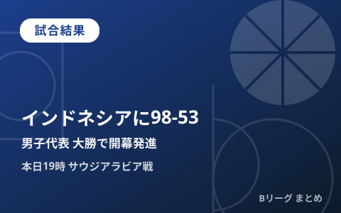
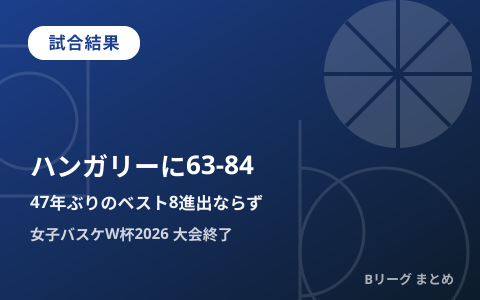
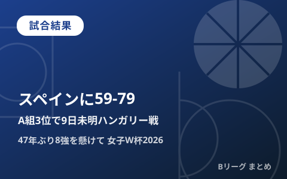
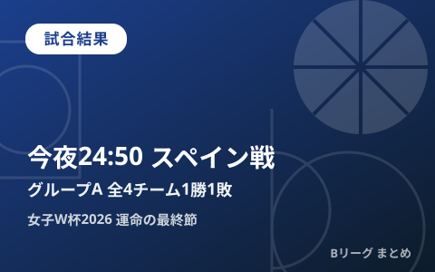

公式・メディアの新着
もっと見る ›配信元の見出しとリンクのみを自動収集しています。タップすると元記事が開きます。
2026.09.09
試合結果
B.LEAGUE MANILAGAMES 2026 「レバンガ北海道 vs 群馬クレインサンダーズ」 GAME1 試合結果のお知らせ
試合結果
「順応」ではなく「進化」を目指す新井楽人、横浜ビー・コルセアーズの新たな顔へ「若手らしくないプレーをして勝利に導ける選手に」
試合結果
【女子ワールドカップ2026】日本代表はハンガリーに63-84で敗れてベスト8進出ならず、途中出場の町田瑩唱が12アシストで奮闘
2026.09.08
試合結果
りそなグループ B.LEAGUE 2026-27 SEASONがいよいよスタート! B.LEAGUE開幕11年目で初!「B.革新」の幕開けを飾る大々的な全国CMを展開 ~CM映像に隠された3名の著名人。新たな挑戦を描く最新AIも駆使したプロモーション映像~
試合結果
【女子ワールドカップ2026】バスケットボール女子日本代表の決勝トーナメント初戦、ハンガリー戦を生中継! 放送・配信スケジュール
2026.09.07
試合結果
インフロニア B.LEAGUE U18 ELITE LEAGUE 2026-27 概要及び セントラル開催分、各クラブのホーム開催分の試合スケジュールのお知らせ
2026.09.06
試合結果
「B.LEAGUE GLOBAL INVITATIONAL 2026」長崎ヴェルカ vs テレコム・バスケッツ・ボン 試合結果のお知らせ
2026.09.01
試合結果
りそなグループ B.LEAGUE 2026-27シーズン 放送・配信決定のお知らせ
試合結果
りそなグループ B.LEAGUE 2026-27シーズン パートナーのお知らせ
試合結果
『U18日清食品トップリーグ2026ディビジョン1』第2週が茨城県で開催、主力を欠く福岡大学附属大濠は初戦白星を飾れず
2026.09.11
試合結果
日本、インドネシアに大勝 アジア大会、バスケで競技開始（共同通信）
最終更新:
2026年09月11日 08:21
試合結果

試合結果
男子日本代表、アジア大会初戦インドネシアに98-53で大勝 津屋一球23得点、本日19時はサウジアラビア戦

試合結果
女子日本代表、ハンガリーに63-84で敗れ47年ぶりのベスト8ならず

試合結果
女子日本代表、スペインに59-79で敗れるもA組3位通過 9日未明にハンガリーと8強懸けた一戦

試合結果
女子日本代表、今夜24:50スペイン戦へ グループAは塨4チーム1勝1敗の大混戦

試合結果
女子日本代表、開催国ドイツに58-74で完敗 W杯2026は1勝1敗で最終戦スペインへ

試合結果
男子日本代表、カタールに123-70で圧勝 八村坨30得点・河村勇輝9アシストでレバノンと並ぶ 6勝目

試合結果
佐賀バルーナーズ、プレシーズンで前季B1王者・長崎ヴェルカに89-85で競り勝つ 新加入ナシール・リトルが躍動

試合結果
男子日本代表、サウジアラビアに106-78で快勝 八村坨29得点・河村勇輝9アシストでW杯予選Window4白星発進

試合結果
「KOBE RISING -2026-」閉幕 神戸ストークスは千葉ジェッツに95-100で惜敗、島根は北海道に1点差で淚

試合結果
河村勇輝24得点で日本代表が韓国に95-66で2連勝、八村塸は欠場｜SoftBank CUP 2026

試合結果
八村坨22得点で衝撃の代表復帰、日本代表が韓国に88-68快勝｜買取大吉カップ2026

試合結果
【インターハイ2026】男子・福岡大濠が9年ぶり、女子・京都精華学園が2年ぶり優勝

試合結果